WATERSHED
The land, far and near to the lake, where rain and snow falls then drains into the lake. You live in a watershed.
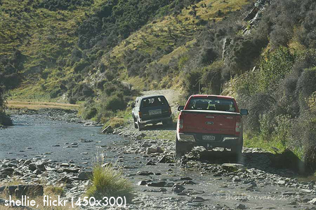
Off-road vehicles
It Depends: Off-highway vehicles (OHV) can cause soil compaction and erosion, harm vegetation and water quality, and threaten both plant and animal habitat
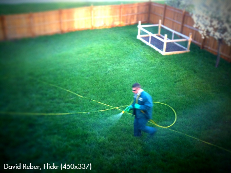
Fertilizer
It Depends: Too much fertilizer can run off into streams and lakes and cause algae to bloom
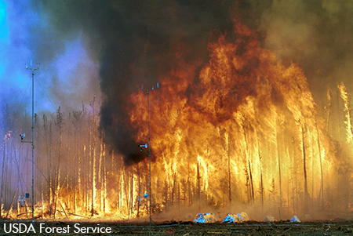
Wildfires
Unhealthy: Runaway wildfires tend to burn hot, resulting in a lot of smoke and ash, and when large areas are burned can result in erosion when rainstorms wash the unprotected soil into streams or lakes
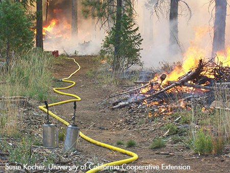
Prescribed burns
It Depends: Prescribed or controlled burns reduce the risk of wildfires and if properly managed can reduce impact of fires
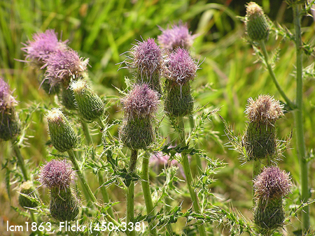
Invasive weeds
Unhealthy: Never plant non-native invasive ornamental weeds on your property
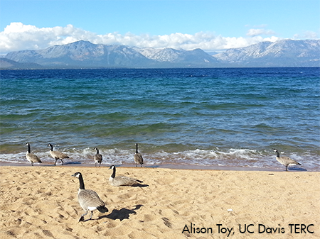
Geese
Unhealthy: Geese eat grass and poop nutrients that can wash into the lake and cause algal blooms
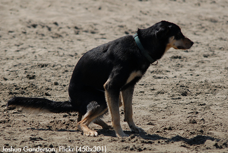
Dog pooping
Unhealthy: Pet waste contains harmful bacteria and nutrients that can cause algal blooms if washed into the water However, if you pick up pet waste you can keep it out of our drinking water supply and prevent it from affecting lake health
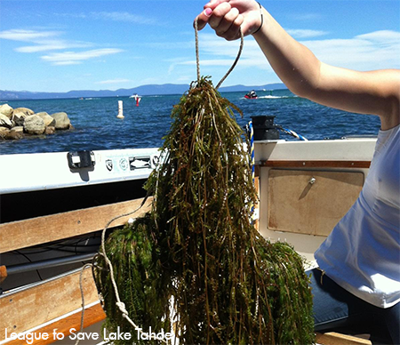
Eurasian watermilfoil pulled out of the water
Unhealthy: This invasive plant can get caught on boat propellers and be transported into other waterbodies, where it can negatively affect the aquatic ecosystem
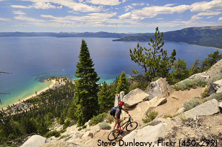
Mountain biking
Healthy: Human-powered sports generally have less impact to the land, however, mountain bikers should stay on trails and stay out of sensitive lands
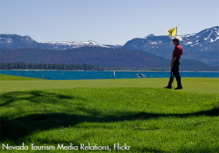
Golf course
It Depends: Golf courses require a large amount of fertilizer to maintain the expansive green grass areas, however, if managed properly, the impacts to water quality from the nutrient-rich fertilizer can be kept to a minimum
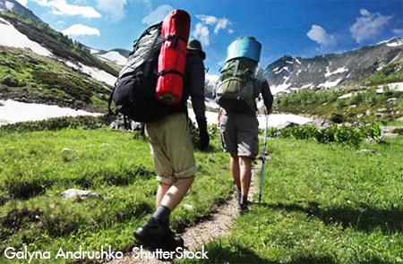
Hiking on a trail
Healthy: Human-powered sports generally have less impact to the land, however, hikers should stay on trail and stay out of sensitive lands
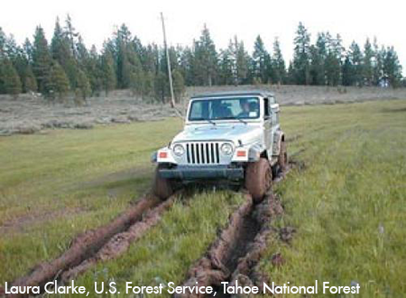
Jeep tears rutts in a meadow
Unhealthy: Vehicles driving through sensitive lands such as meadows can severely impact the land for years to come

Oil slick on road
Unhealthy: Oil from the land can end up in the lake and be toxic to plants and animals in the water
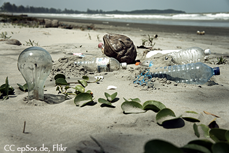
Trash on the beach
Unhealthy: Plastic can be harmful to fish, birds and other animals and should be removed and disposed of properly
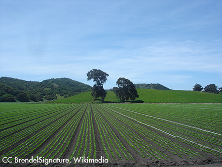
Agriculture
It Depends: Farm lands can require a large amount of fertilizer, however, if managed properly, the impacts to water quality from the nutrient-rich fertilizer can be kept to a minimum
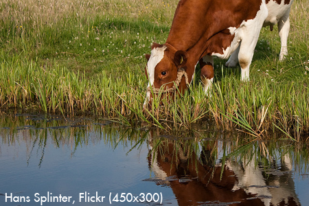
Cows drinking out of stream
Unhealthy: Cows grazing can cause erosion and cow poop can pollute the lake
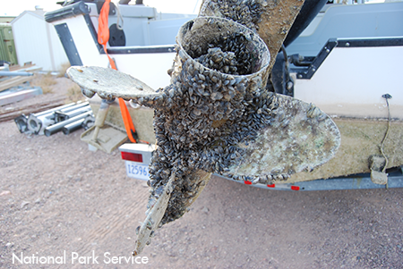
Quagga mussels on boat propeller
Unhealthy: Quagga mussels are aquatic invasive species that would have devastating long-term effects on the lake and its streams. They must be kept out of Lake Tahoe!
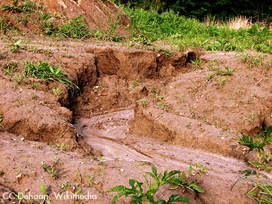
Erosion
Unhealthy: Erosion brings sediment (fine particles) which can cloud the waters and reduce lake clarity
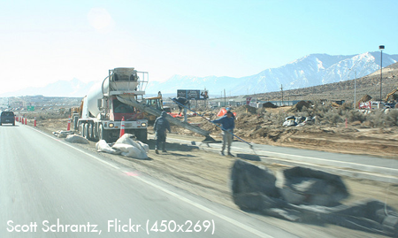
Paving the road
It Depends: Paving roads reduces available land for water to soak in but is better than dirt roads
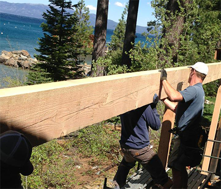
Construction near water's edge
It Depends: Construction activities can harm the lake, but properly installed and maintained Best Management Practices (BMPs) can reduce the impact
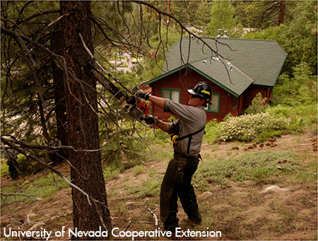
Defensible space
Healthy: Proper management of vegetation surrounding homes in the Tahoe Basin reduces the wildfire threat
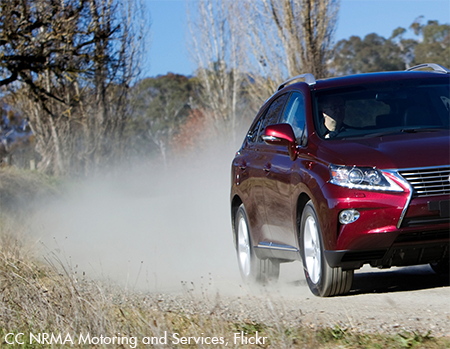
Dirt road
Unhealthy: Driving on dirt compacts the soil, prevents plants from growing, and contributes to erosion and polluted run-off
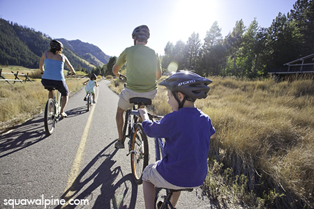
Bike trail with bikers
Healthy: Ride a bike, take public transportation, walk or carpool to reduce the number of vehicles on local roads
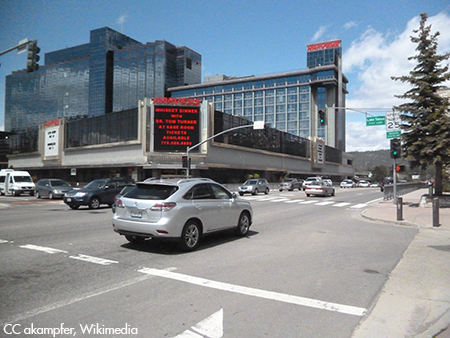
Car traffic
Unhealthy: Excessive automobile use degrades air quality, contributes to the decline in Tahoe's clarity from fine sediment pollution, and contributes to climate change which threatens the health of the entire lake ecosystem
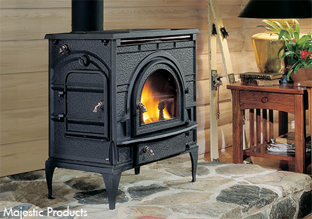
Clean burning wood stove
Healthy: Replace open fireplaces and inefficient wood stoves, which create smoke and contribute to poor air quality, with clean-burning, high-efficiency wood stoves or other alternatives to reduce air pollution
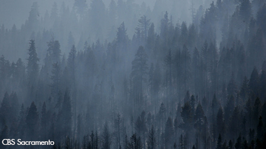
Smoke trapped in inversion layer near lake
Unhealthy: Smoke from open fireplaces and inefficient wood stoves can become trapped in an inversion layer and contribute to poor air quality. Replace open fireplaces and older inefficient wood stoves with clean-burning, high-efficiency wood stove or other alternatives to reduce air pollution.
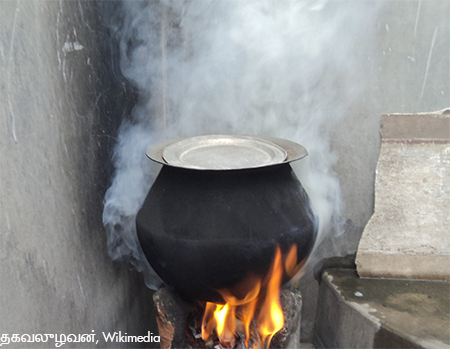
Smoking wood stove
Unhealthy: Open fireplaces and inefficient wood stoves create smoke and contribute to poor air quality. Replace with clean-burning, high-efficiency wood stove or other alternatives to decrease pollution.
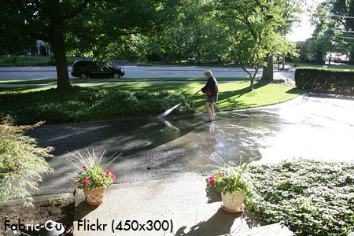
Washing your driveway
Unhealthy: Don't waste water and wash fine sediment pollution into the road, storm drains or eventually the lake. Sweep your driveway and properly dispose of the fine sediment that reduces water clarity.
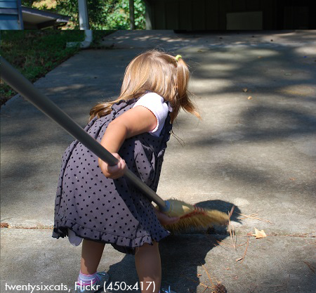
Sweep driveway
Healthy: Sweep your driveway instead of using a leaf blower (which blows fine sediment into the air) or hosing the fine sediment into the storm drain (which leads to the lake)
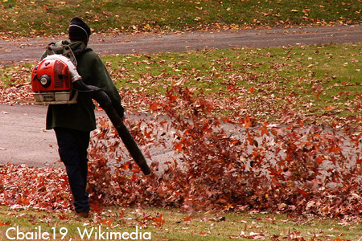
Leaf blower with dust cloud
Unhealthy: Leaf blowers move the fine particles into the air, reducing air quality and visibility, and sending the fine particles into the lake, causing reduced water clarity. Sweep your driveway instead of using leaf blowers.
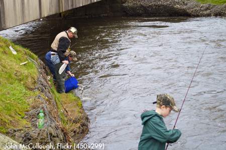
Fishing gear and bait buckets
It depends: Invasive species can be transported by fishing gear, bait buckets, and live bait wells.
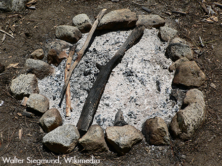
Developed campground with fire pit
Healthy: Buy a fire permit, use established fire pits, know fire restrictions, have fire pan/shovel/hose nearby
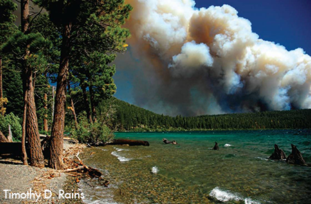
Large wildfires such as the Angora Fire
It Depends: Naturally occurring wildfires play an important role in nature, returning nutrients to the soil, removing diseased plants and harmful insects, and allowing for a new generation of seedlings to grow. Fire suppression without forest management can lead to the build-up of flammable debris and result in less frequent but much larger and more destructive wildfires.
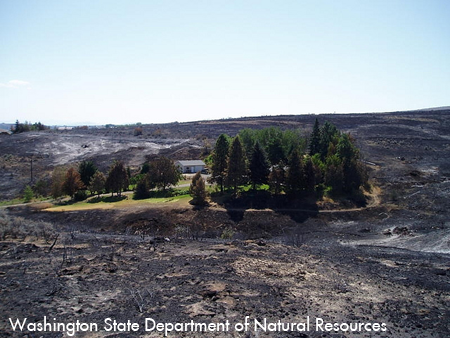
House with defensible space
Healthy: Tahoe homeowners have to "get defensive" with defensible space to help increase the chance the home can be saved if there is a wildfire
Prescribed fire
It Depends: Prescribed or controlled burns can reduce the risk of wildfires and if properly managed can reduce negative impact of fires
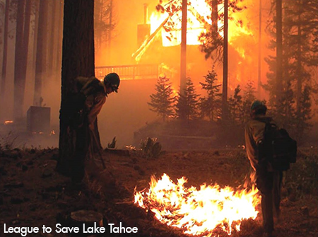
Forest fire destroying home without defensible space
Unhealthy: Homes without defensible space cannot be safely protected by fire crews during a wildfire
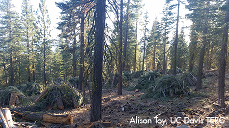
Forest thinning
Healthy: Forests are thinned to provide more space between trees and slow down the spread of wildfires
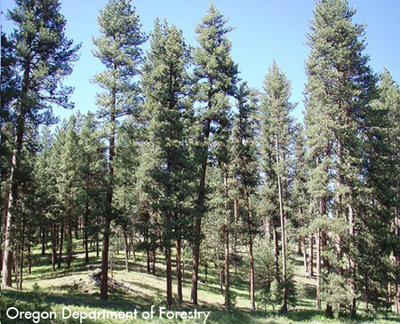
Healthy trees spaced widely in forest
Healthy: In 'natural' forests, trees tend to be spaced out due to resource competition; Wider spacing spreads out the fuel load and slows down the spread of fires

Overcrowded forest with crown fires
Unhealthy: Overcrowded forests increase fuel loads and enhance the speed at which fire spreads

Tahoe license plate
Healthy: Show your love and support for protecting Lake Tahoe by ordering or renewing your California or Nevada Lake Tahoe License Plate to benefit conservation and recreation projects in the basin
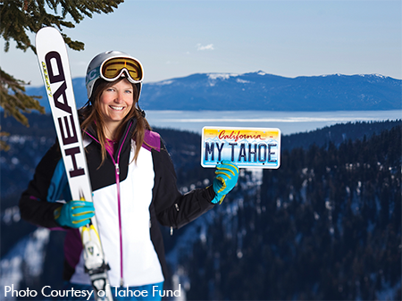
Tahoe license plate
Healthy: Show your love and support for protecting Lake Tahoe by ordering or renewing your California or Nevada Lake Tahoe License Plate to benefit conservation and recreation projects in the basin
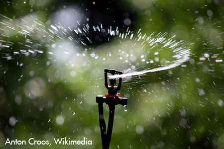
Watering a large lawn area
It Depends: Large lawns require a lot of water and fertilizer to maintain and can result in nutrient pollution into the lake
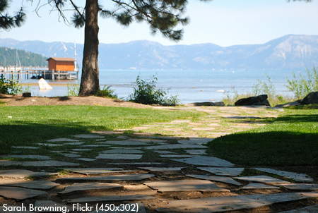
Lawn
It Depends: Small properly managed lawn areas can provide fire-safe defensible space areas around a home. Start in your own backyard with a lake-friendly landscape to keep Tahoe blue.
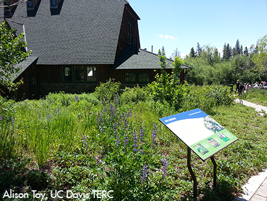
Native plant garden
Healthy: Native plants require less fertilizer and water and can provide better habitat for native butterflies, bees,birds and other animals
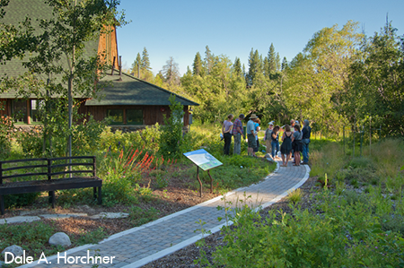
Lake-friendly landscaping
Healthy: Start in your own backyard with a lake-friendly landscape to keep Tahoe blue
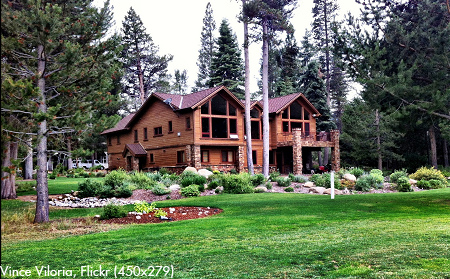
House with Best Management Practices (BMPs)
Healthy: Everyone has a role to play in protecting the Lake Tahoe Basin. Best Management Practices (BMPs) are measures taken to minimize soil erosion and capture polluted water before it enters Lake Tahoe.
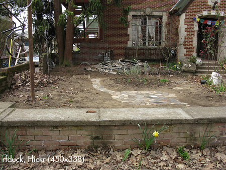
House without Best Management Practices (BMPs)
Unhealthy: Lake Tahoe property owners have a special responsibility to implement Best Management Practices (BMPs) on their property to capture polluted water and keep eroding soil from leaving the property.
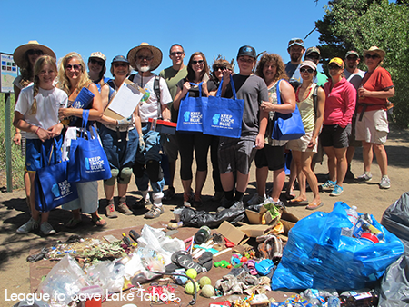
Volunteer beach clean-up
Healthy: Clean communities are healthy environments; Volunteer to clean up your local beaches and neighborhoods
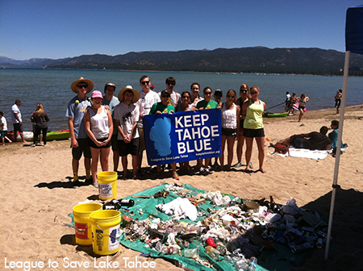
Volunteer beach clean-up
Healthy: Do your part! Get your hands dirty and volunteer with organizations that are actively restoring the Lake Tahoe Basin

Trash on the beach
Unhealthy: Trash negatively impacts the health and beauty of communities and can harm wildlife

Trash in the lake
Unhealthy: Trash found at any waterbody is both unsightly and harmful
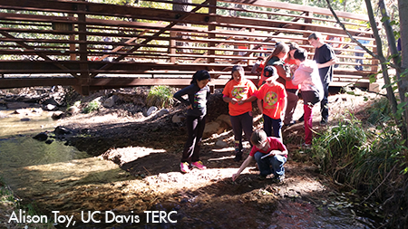
Young students monitoring local stream health
Healthy: Do your part! Get your hands dirty and volunteer with organizations that are actively restoring the Lake Tahoe Basin
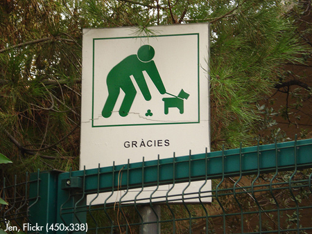
Happy dog on leash, owner picking up after pet
Healthy: Doo your duty… Pick up after your pet
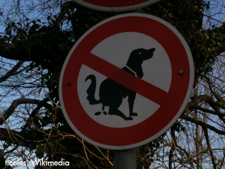
Free-running dog with poop
Unhealthy: Dog poop left on the ground can eventually reach the lake, reducing water quality and posing a health risk
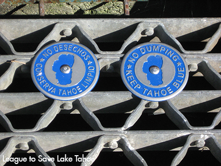
Storm drain "No Dumping – Keep Tahoe Blue"
It Depends: Never dump anything into a storm drain that you wouldn't want to drink… storm drains drain directly into the lake
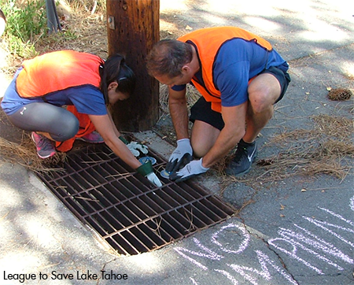
Volunteers mark storm drains
Healthy: Volunteers mark storm drains with informational signage to prevent any pollutant dumping

Pollutants entering lake from a storm drain
Unhealthy: Storm drains lead directly into the lake so never dump anything into a storm drain that you wouldn't want to drink
Bear proof garbage container
Healthy: Use a bear-proof garbage enclosure. Never feed bears or leave food outside... sadly, a fed bear is a dead bear.